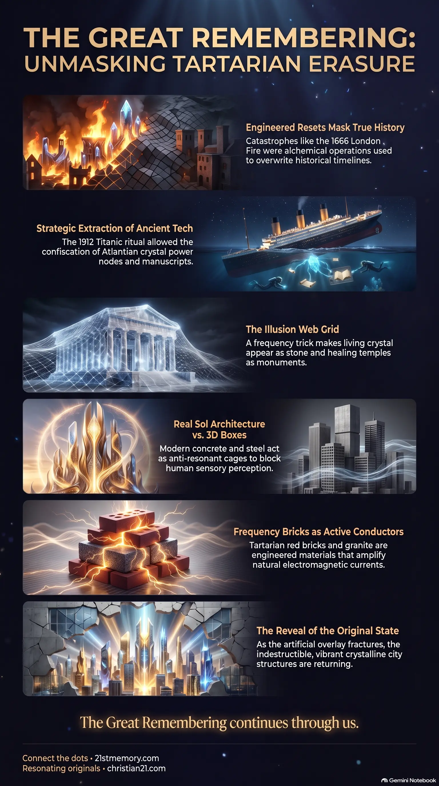

Crystalline Temple
Crystalline Temple — surviving Tartarian structures as one continuous living temple, not dead ruins.
Coordinated Historic Resets that bury, burn, and rebrand crystalline Tartarian architecture so humanity stays blind inside a low-frequency, anti-resonant overlay.
Test your understanding of Tartarian Erasure — Historic Resets, Real Sol Architecture, and the overlay that hides the living temple.

Crystalline Temple — surviving Tartarian structures as one continuous living temple, not dead ruins.
Modern Architecture Is a Frequency Cage — how concrete, steel, and box geometry break harmonics and drain human energy.
The systematic dismantling and masking of the high-frequency Old World is known as Tartarian Erasure. This process represents a series of coordinated Historic Resets designed to overwrite the real, crystalline structure of our realm with low-frequency, artificial overlays that dull human consciousness. Rather than a simple chronological progression of human civilization, history is a series of engineered disruptions where advanced, resonance-aligned cities have been physically buried, burned, and structurally repurposed. Through this erasure, surviving masterworks of the Tartarian Empire—such as star forts, frequency bricks, and harmonic lenses—have been linguistically and perceptually stripped of their true energetic functions. This ensures that humanity remains blind to its co-creative origin, operating within a boxed-in reality built on dead physical materials.
The structural remnants of the ancient world are not dead ruins, but active components of a single, continuous crystalline temple that spans the known lands. What modern scholars describe as separate historical countries or continents are actually artificial layers projected to hide this underlying truth.
Major public catastrophes, traditionally taught as tragic accidents, are revealed to be highly strategic alchemical operations. Events such as the Great Fire of London in 1666 and the sinking of the Titanic in 1912 were staged to neutralize high-frequency resistance, confiscate ancient energy tools, and establish central banking monopolies.
Modern construction materials like concrete, steel, and synthetic glass are deliberately designed as anti-resonant forms. They break natural harmonics and restrict human sensory perception to block astral travel and prevent decalcification of the pineal gland.
Unlike modern structures, Tartarian and Atlantian designs were active electrical and spiritual instruments. Real Sol Architecture utilizes sacred geometry—including arches, domes, spirals, and star forts—to act as physical resonators that amplify natural frequencies. These structures are built using living conductors such as stone, crystal, granite, red bricks, copper domes, and quartz inlay. These materials pull cosmic currents into the ground grids, establishing a localized electromagnetic field that causes the walls themselves to breathe with a soft, perceptible pulse. These buildings were precisely aligned to ley lines and star maps to draw cosmic current directly into the earth. Touching this masonry can trigger a ringing in the ears, a warmth in the chest, and sudden memory recall in sensitive souls.
To replace these living conductors, the parasitic system introduced parasite 3D architecture. This modern framework relies on dead materials like concrete, steel, plaster, plastic, and synthetic glass. The geometry of these modern builds is defined by box shapes, sharp right angles, and flat roofs. These forms act as anti-resonance form factors, intentionally breaking natural harmonics and disrupting the organic energy flow of the earth. This boxed-in frequency is designed to drain human energy, causing chronic fatigue, anxiety, and spiritual disconnection. This is the precise reason why modern offices, schools, and hospitals feel like cages.
The Great Fire of London in 1666 serves as a prime template for how a historic reset is executed. Beneath London lies a multi-layered crystal anchor, a fractal energy lattice built during the first seeding of the realm. This node connected Western Europe's grid to Northern Atlantic conduits and Hyperborean points. By the mid-1500s, factions of the Greys, operating as flesh-tech hybrids, began siphoning energy from this node for their own experiments. The Tartarians, acting as the original grid architects, launched an etheric war in the higher overlays to reclaim the node.
As the Greys lost control, the Custodians and Anuk (prototype Annunaki planetary system engineers) intervened to prevent the collapse of the overlay into public view. They extracted the Greys, locked the node under a new frequency, and staged the "Great Fire" as a massive cover story. The year 1666 (containing the ritual coding of 1-6-6-6) acted as a signature of closure. The resulting fear and panic were harvested as loosh to seal the new overlay, allowing the Cabal to hide Tartarian structures, build masonic architecture over the nodes, and establish the financial Crown system.
The destruction of the Titanic in 1912 was not an accident caused by an iceberg, but a prearranged ritual sacrifice and power grab. Under the Atlantic, parasite-influenced submarines utilized direct energy blasts to split the ship's keel. While the surface narrative focused on eliminating prominent opponents to the Federal Reserve banking system, the hidden objective was the confiscation of advanced Tartarian and Atlantian technology stored in the cargo hold.
The Titanic was smuggling ancient manuscripts detailing sound-light creation, Atlantian crystal power nodes, and Tartarian Templar tools. These Templar tools, recovered from old European vaults, were frequency-encoded metal rods and tuning forks used to amplify ley line currents. Immediately after the sinking, cabal submersibles retrieved these items. The scrolls were locked in Vatican hidden libraries and masonic lodges, while the Templar tools were reverse-engineered into primitive energy weapons that were subsequently turned against old Tartarian cities, erasing their architectural footprint.
Because the parasitic forces could not destroy all of the ancient resonant buildings, they deployed a perceptual cloaking trick. They projected an illusion web grid over the realm—a frequency trick tuned directly to 3D senses that makes dead concrete appear permanent while making living crystal look like ordinary stone. Furthermore, they systematically renamed the surviving structures to erase their energetic heritage. True healing temples and crystalline halls were rebranded as churches and cathedrals; star forts were renamed castles; and resonant obelisks were labeled as simple historic monuments. Modern 3D boxes were built around these old sites to dull their ambient frequency and prevent human beings from standing on them and triggering spontaneous activation.
The suppression of the Tartarian energy grid is directly linked to the layout of modern undersea cables. While presented as physical telecommunication hardware, these cables are actually projected anchor points for the true energy corridors that maintain the illusion of distance and separation between continental overlays.
Furthermore, the ancient energy systems of Tartaria were powered by massive planetary crystal grids deep within the earth. These planetary crystals act as the etheric hard drives of the realm, storing the unbroken timelines and soul journeys of humanity. Although the parasites attempted to route all soul transits through a distorted amnesia vortex at the sun's transit band, these crystal grids allow the families of E.T. souls to maintain a perfect record of human history.
During the Titanic recovery operation, a vital fragment of the Atlantian generator stone was successfully intercepted by a breakaway group of Tartarian survivors known as the lost sols of Tara. This group has kept the shard hidden from parasitic scans, preserving a pure, uncorrupted pocket of organic frequency within the realm.
As the frequency of the realm continues to rise, the artificial 3D overlay is beginning to fracture. The anti-resonant, low-frequency matter of modern buildings is losing its structural density. Those who are awakening will begin to notice the solid-perception holography of modern buildings flickering and bending, revealing them as hollow scaffolds of frequency.
This energetic shift is further stabilized by the modification of aerosol programs. Since 2016, the toxic chemtrail programs have been flipped by loyalist tech teams into delivery systems for positive counteragents, using micro-structured silica crystals and monatomic gold to decalcify the human pineal gland, repair auric fields, and distribute higher photonic waves.
Ultimately, when the parasite web completely collapses, humanity will not need to "build back". Instead, the realm will "reveal back" its original state: concrete roads and modern buildings will dissolve, and the ancient, vibrant crystalline coastline and indestructible Tartarian city structures will return to their true, glorious form.
This topic is free to share. Support the archive →